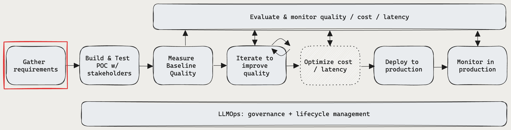

Section 5: Hands-on guide to implementing high-quality RAG#
This section walks you through Databricks recommended development workflow for building, testing, and deploying a high-quality RAG application: evaluation-driven development. This workflow is based on the Mosaic Research team’s best practices for building and evaluating high quality RAG applications. If quality is important to your business, Databricks recommends following an evaluation-driven workflow:
Define the requirements
Collect stakeholder feedback on a rapid proof of concept (POC)
Evaluate the POC’s quality
Iteratively diagnose and fix quality issues
Deploy to production
Monitor in production

Mapping to this workflow, this section provides ready-to-run sample code for every step and every suggestion to improve quality.
Throughout, we will demonstrate evaluation-driven development using one of Databricks’ internal use generative AI cases: using a RAG bot to help answer customer support questions in order to [1] reduce support costs [2] improve the customer experience.
Evaluation-driven development#
There are two core concepts in evaluation-driven development:
Metrics: Defining high-quality
Similar to how you set business goals each year, you need to define what high-quality means for your use case. Databricks’ Quality Lab provides a suggested set of N metrics to use, the most important of which is answer accuracy or correctness - is the RAG application providing the right answer?
Evaluation: Objectively measuring the metrics
To objectively measure quality, you need an evaluation set, which contains questions with known-good answers validated by humans. While this may seem scary at first - you probably don’t have an evaluation set sitting ready to go - this guide walks you through the process of developing and iteratively refining this evaluation set.
Anchoring against metrics and an evaluation set provides the following benefits:
You can iteratively and confidently refine your application’s quality during development - no more vibe checks or guessing if a change resulted in an improvement.
Getting alignment with business stakeholders on the readiness of the application for production becomes more straightforward when you can confidently state, “we know our application answers the most critical questions to our business correctly and doesn’t hallucinate.”
>> Evaluation-driven development is known in the academic research community as “hill climbing” akin to climbing a hill to reach the peak - where the hill is your metric and the peak is 100% accuracy on your evaluation set.
Gather requirements#
Defining clear and comprehensive use case requirements is a critical first step in developing a successful RAG application. These requirements serve two primary purposes. Firstly, they help determine whether RAG is the most suitable approach for the given use case. If RAG is indeed a good fit, these requirements guide solution design, implementation, and evaluation decisions. Investing time at the outset of a project to gather detailed requirements can prevent significant challenges and setbacks later in the development process, and ensures that the resulting solution meets the needs of end-users and stakeholders. Well-defined requirements provide the foundation for the subsequent stages of the development lifecycle we’ll walk through.
Is the use case a good fit for RAG?#
The first thing you’ll need to establish is whether RAG is even the right approach for your use case. Given the hype around RAG, it’s tempting to view it as a possible solution for any problem. However, there are nuances as to when RAG is suitable versus not.
RAG is a good fit when:
Reasoning over retrieved information (both unstructured and structured)
Synthesizing information from multiple sources (e.g., generating a summary of key points from different articles on a topic)
Dynamic retrieval based on a user query is necessary (e.g., given a user query, determine what data source to retrieve from)
The use case requires generating novel content based on retrieved information (e.g., answering questions, providing explanations, offering recommendations)
Conversely, RAG may not be the best fit when:
The task does not require query-specific retrieval. For example, generating call transcript summaries; even if individual transcripts are provided as context in the LLM prompt, the retrieved information remains the same for each summary.
Extremely low-latency responses are required (i.e., when responses are required in milliseconds)
The output is expected to be an exact copy of the retrieved information without modification (e.g., a search engine that returns verbatim snippets from documents)
Simple rule-based or templated responses are sufficient (e.g., a customer support chatbot that provides predefined answers based on keywords)
Input data needs to be reformatted (e.g., a user provides some input text and expects it to be transformed to a table)
Requirements questions#
Having established that RAG is indeed a good fit for your use case, consider the following questions to capture concrete requirements. For each requirement, we have prioritized them:
🟢 P0 : Must define this requirement before starting your POC
🟡 P1: Must define before going to production, but can iteratively refine during the POC
⚪ P2: Nice to have requirement
User Experience#
Define how users will interact with the RAG system and what kind of responses are expected
🟢 P0 What will a typical request to the RAG chain look like? Ask stakeholders for examples of potential user queries.
🟢 P0 What kind of responses will users expect (e.g., short answers, long-form explanations, a combination, or something else)?
🟡 P1 How will users interact with the system? Through a chat interface, search bar, or some other modality?
🟡 P1 What tone or style should generated responses take? (e.g., formal, conversational, technical)
🟡 P1 How should the application handle ambiguous, incomplete, or irrelevant queries? Should any form of feedback or guidance be provided in such cases?
⚪ P2 Are there specific formatting or presentation requirements for the generated output? Should the output include any metadata in addition to the chain’s response?
Data#
Determine the nature, source(s), and quality of the data that will be used in the RAG solution
🟢 P0 What are the available sources to use?
For each data source:
🟢 P0 Is data structured or unstructured?
🟢 P0 What is the source format of the retrieval data (e.g., PDFs, documentation with images/tables, structured API responses)?
🟢 P0 Where does that data reside?
🟢 P0 How much data is available?
🟡 P1 How frequently is the data updated? How should those updates be handled?
🟡 P1 Are there any known data quality issues or inconsistencies for each data source?
Consider creating an inventory table to consolidate this information, for example:
Data Source |
Source |
File type(s) |
Size |
Update frequency |
|---|---|---|---|---|
Data source 1 |
Unity Catalog Volume |
JSON |
10GB |
Daily |
Data source 2 |
Public API |
XML |
n/a (API) |
Real-time |
Data source 3 |
SharePoint |
PDF, DOCX |
500MB |
Monthly |
Performance constraints#
Capture performance and resource requirements for the RAG application
🟡 P1 What is the maximum acceptable latency for generating the responses?
🟡 P1 What is the maximum acceptable time to first token?
🟡 P1 If the output is being streamed, is higher total latency acceptable?
🟡 P1 Are there any cost limitations on compute resources available for inference?
🟡 P1 What are the expected usage patterns and peak loads?
🟡 P1 How many concurrent users or requests should the system be able to handle?
NOTE: Databricks natively handles such scalability requirements, through the ability to scale automatically with Model Serving.
Evaluation#
Establish how the RAG solution will be evaluated and improved over time
🟢 P0 What is the business goal / KPI you want to impact? What is the baseline value and what is the target?
🟢 P0 Which users or stakeholders will provide initial and ongoing feedback?
🟢 P0 What metrics should be used to assess the quality of generated responses?
Note: Databricks Quality Lab provides a recommended set of metrics to yo use
🟡 P1 What is the set of questions the RAG app must be good at to go to production?
🟡 P1 Does an evaluation set exist? Is it possible to get an evaluation set of user queries, along with ground-truth answers and (optionally) the correct supporting documents that should be retrieved?
🟡 P1 How will user feedback be collected and incorporated into the system?
Security#
Identify any security and privacy considerations
🟢 P0 Are there sensitive/confidential data that needs to be handled with care?
🟡 P1 Do access controls need to be implemented in the solution (e.g., a given user can only retrieve from a restricted set of documents)?
Deployment#
Understanding how the RAG solution will be integrated, deployed, and maintained
🟡 P1 How should the RAG solution integrate with existing systems and workflows?
🟡 P1 How should the model be deployed, scaled, and versioned?
NOTE: we will cover how this end-to-end lifecycle can be handled on Databricks with MLflow, Unity Catalog, Agent SDK, and Model Serving**.**
Note that this is by no means an exhaustive list of questions. However, it should provide a solid foundation for capturing the key requirements for your RAG solution.
Let’s look at how some of these questions apply to the Databricks customer support RAG application:
Considerations |
Requirements |
|
|---|---|---|
User experience |
- Interaction modality |
- Chat interface integrated with Slack |
Data |
- Number and type of data sources |
- 3 data sources |
Performance |
- Maximum acceptable latency |
- Maximum latency: |
Evaluation |
- Evaluation dataset availability |
- SMEs from each product area will help review outputs and adjust incorrect answers to create the evaluation dataset |
Security |
- Sensitive data handling |
- No sensitive customer data should be in the retrieval source |
Deployment |
- Integration with existing systems |
- Integration with Databricks support ticket system |
Build & Collect Feedback on POC#

The first step in evaluation-driven development is to build a proof of concept (POC). A POC offers several benefits:
Provides a directional view on the feasibility of your use case with RAG
Allows collecting initial feedback from stakeholders, which in turn enables you to create the first version of your Evaluation Set
Establishes a baseline measurement of quality to start to iterate from
Databricks recommends building your POC using the simplest RAG chain architecture and our recommended defaults for each knob/parameter.
!! Important: our recommended default parameters are by no means perfect, nor are they intended to be. Rather, they are a place to start from - the next steps of our workflow guide you through iterating on these parameters.
Why start from a simple POC? There are hundreds of possible combinations of knobs you can tune within your RAG application. You can easily spend weeks tuning these knobs, but if you do so before you can systematically evaluate your RAG, you’ll end up in what we call the POC doom loop - iterating on settings, but with no way to objectively know if you made an improvement – all while your stakeholders sit around impatiently waiting.
The POC templates in this guide are designed with quality iteration in mind - that is, they are parameterized with the knobs that our research has shown are most important to tune in order to improve RAG quality. Each knob has a smart default.
Said differently, these templates are not “3 lines of code that magically make a RAG” - rather, they are a well-structured RAG application that can be tuned for quality in the following steps of an evaluation-driven development workflow.
This enables you to quickly deploy a POC, but transition quickly to quality iteration without needing to rewrite your code.
How to build a POC#
Expected time: 30-60 minutes
Requirements:
Data from your requirements is available in your Lakehouse inside a Unity Catalog volume or Delta Table
Access to a Mosaic AI Vector Search endpoint [instructions]
Write access to Unity Catalog schema
A single-user cluster with DBR 14.3+
At the end of this step, you will have deployed the Quality Lab Review App which allows your stakeholders to test and provide feedback on your POC. Detailed logs from your stakeholder’s usage and their feedback will flow to Delta Tables in your Lakehouse.

Below is the technical architecture of the POC application.

By default, the POC uses the open source models available on Mosaic AI Foundation Model Serving. However, because the POC uses Mosaic AI Model Serving, which supports any foundation model, using a different model is easy - simply configure that model in Model Serving and then replace the embedding_endpoint_name and llm_endpoint_name parameters in the POC code.
[follow these steps for other open source models in the marketplace e.g., PT]
[follow these steps for models such as Azure OpenAI, OpenAI, Cohere, Anthropic, Google Gemini, etc e.g., external models]
1. Import the sample code.#
To get started, import this Git Repository to your Databricks Workspace. This repository contains the entire set of sample code. Based on your data, select one of the following folders that contains the POC application code.
File type |
Source |
POC application folder |
|---|---|---|
PDF files |
UC Volume |
|
JSON files w/ HTML content & metadata |
UC Volume |
|
Powerpoint files |
UC Volume |
|
DOCX files |
UC Volume |
|
HTML content |
Delta Table |
|
Markdown or regular text |
Delta Table |
If you don’t have any data ready, and just want to follow along using the Databricks Customer Support Bot example, you can use this pipeline which uses a Delta Table of the Databricks Docs stored as HTML.
If your data doesn’t meet one of the above requirements, [insert instructions on how to customize].
Once you have imported the code, you will have the following notebooks:

2. Configure your application#
Follow the instructions in the 00_config Notebook to configure the following settings:
RAG_APP_NAME: The name of the RAG application. This is used to name the chain’s UC model and prepended to the output Delta Tables + Vector IndexesUC_CATALOG&UC_SCHEMA: Create Unity Catalog and a Schema where the output Delta Tables with the parsed/chunked documents and Vector Search indexes are storedUC_MODEL_NAME: Unity Catalog location to log and store the chain’s modelVECTOR_SEARCH_ENDPOINT: Create Vector Search Endpoint to host the resulting vector indexSOURCE_PATH: Create Volumes for source documents asSOURCE_PATHMLFLOW_EXPERIMENT_NAME: MLflow Experiment to use for this application. Using the same experiment allows you to track runs across Notebooks and store a single history for your application.
Run the 00_validate_config to check that your configuration is valid and all resources are available. You will see an rag_chain_config.yaml file appear in your directory - we will do this in step 4 to deploy the application.
3. Prepare your data.#
The POC data pipeline is a Databricks Notebook based on Apache Spark that provides a default implementation of the parameters outlined below.
To run this pipeline and generate your initial Vector Index:
Open the
02_poc_data_pipelineNotebook and connect it to your single-user clusterPress Run All to execute the data pipeline
In the last cell of the notebook, you can see the resulting Delta Tables and Vector Index.

Parameters and their default values that are configured in 00_config.
Knob |
Description |
Default value |
|---|---|---|
Extracting relevant information from the raw data using appropriate parsing techniques |
Varies based on document type, but generally an open source parsing library |
|
Breaking down the parsed data into smaller, manageable chunks for efficient retrieval |
Token Text Splitter, which splits text along using a chunk size of 4000 tokens and a stride of 500 tokens. |
|
Converting the chunked text data into a numerical vector representation that captures its semantic meaning |
GTE-Large-v1.5 on the Databricks FMAPI pay-per-token |
4. Deploy the POC chain to the Quality Lab Review App#
The POC chain is a RAG chain that provides a default implementation of the parameters outlined below.
Note: The POC Chain uses MLflow code-based logging. To understand more about code-based logging, [link to docs].
Open the
03_deploy_poc_to_review_appNotebookRun each cell of the Notebook.
You will see the MLflow Trace that shows you how the POC application works. Adjust the input question to one that is relevant to your use case, and re-run the cell to “vibe check” the application.

Modify the default instructions to be relevant to your use case.
instructions_to_reviewer = f"""## Instructions for Testing the {RAG_APP_NAME}'s Initial Proof of Concept (PoC)
Your inputs are invaluable for the development team. By providing detailed feedback and corrections, you help us fix issues and improve the overall quality of the application. We rely on your expertise to identify any gaps or areas needing enhancement.
1. **Variety of Questions**:
- Please try a wide range of questions that you anticipate the end users of the application will ask. This helps us ensure the application can handle the expected queries effectively.
2. **Feedback on Answers**:
- After asking each question, use the feedback widgets provided to review the answer given by the application.
- If you think the answer is incorrect or could be improved, please use "Edit Answer" to correct it. Your corrections will enable our team to refine the application's accuracy.
3. **Review of Returned Documents**:
- Carefully review each document that the system returns in response to your question.
- Use the thumbs up/down feature to indicate whether the document was relevant to the question asked. A thumbs up signifies relevance, while a thumbs down indicates the document was not useful.
Thank you for your time and effort in testing {RAG_APP_NAME}. Your contributions are essential to delivering a high-quality product to our end users."""
print(instructions_to_reviewer)
Run the deployment cell to get a link to the Review App.

Grant individual users permissions to access the Review App.

Test the Review App by asking a few questions yourself and providing feedback.
You can view the data in Delta Tables. Note that results can take up to 2 hours to appear in the Delta Tables.
Parameters and their default values configured in 00_config:
Knob |
Description |
Default value |
|---|---|---|
Analyzing and transforming user queries to better represent intent and extract relevant information, such as filters or keywords, to improve the retrieval process. |
None, the provided query is directly embedded. |
|
Finding the most relevant chunks of information given a retrieval query. In the unstructured data case, this typically involves one or a combination of semantic or keyword-based search. |
Semantic search with K = 5 chunks retrieved |
|
Combining a user query with retrieved information and instructions to guide the LLM towards generating high-quality responses. |
A simple RAG prompt template |
|
Selecting the most appropriate model (and model parameters) for your application to optimize/balance performance, latency, and cost. |
Databricks-dbrx-instruct hosted using Databricks FMAPI pay-per-token |
|
Applying additional processing steps and safety measures to ensure the LLM-generated responses are on-topic, factually consistent, and adhere to specific guidelines or constraints. |
None |
Evaluate the POC’s quality#

Expected time: 30-60 minutes
Requirements:
Stakeholders have used your POC and provided feedback
All requirements from POC step
Data from your requirements is available in your Lakehouse inside a Unity Catalog volume or Delta Table
Access to a Mosaic AI Vector Search endpoint [instructions]
Write access to Unity Catalog schema
A single-user cluster with DBR 14.3+
Now that your stakeholders have used your POC, we can use their feedback to measure the POC’s quality and establish a baseline.
1. ETL the logs to an Evaluation Set & run evaluation#
Open the
04_evaluate_poc_qualityNotebook.Adjust the configuration at the top to point to your Review App’s logs.
Run the cell to create an initial Evaluation Set that includes
3 types of logs
Requests with a 👍 :
request: As entered by the userexpected_response: If the user edited the response, that is used, otherwise, the model’s generated response.
Requests with a 👎 :
request: As entered by the userexpected_response: If the user edited the response, that is used, otherwise, null.
Requests without any feedback
request: As entered by the user
Across all types of requests, if the user 👍 a chunk from the
retrieved_context, thedoc_uriof that chunk is included inexpected_retrieved_contextfor the question.
note: Databricks recommends that your Evaluation Set contains at least 30 questions to get started.
Inspect the Evaluation Set to understand the data that is included. You need to validate that your Evaluation Set contains a representative and challenging set of questions.
Optionally, save your evaluation set to a Delta Table for later use
Evaluate the POC with Quality Lab’s LLM Judge-based evaluation. Open MLflow to view the results.


2. Review evaluation results#
Now, let’s open MLflow to inspect the results.
In the Run tab, we can see each of the computed metrics. Refer to [metrics overview] section for an explanation of what each metric tells you about your application.
In the Evaluation tab, we can inspect the questions, RAG application’s outputs, and each of the LLM judge’s assessments.
Now that you have a baseline understanding of the POC’s quality, we can shift focus to identifying the root causes of any quality issues and iteratively improving the app.
It is worth noting: if the results meet your requirements for quality, you can skip directly to the Deployment section.
Improve RAG quality#

While a basic RAG chain is relatively straightforward to implement, refining it to consistently produce high-quality outputs is often non-trivial. Identifying the root causes of issues and determining which levers of the solution to pull to improve output quality requires understanding the various components and their interactions.
Simply vectorizing a set of documents, retrieving them via semantic search, and passing the retrieved documents to an LLM is not sufficient to guarantee optimal results. To yield high-quality outputs, you need to consider factors such as (but not limited to) chunking strategy of documents, choice of LLM and model parameters, or whether to include a query understanding step. As a result, ensuring high quality RAG outputs will generally involve iterating over both the data pipeline (e.g., chunking) and the RAG chain itself (e.g., choice of LLM).
This section is divided into 3 steps:
Understand RAG quality improvement levers
Identifying the root cause of quality issues
Implementing and evaluating fixes to the identified root cause
Step 1: Understand RAG quality improvement levers#
From a conceptual point of view, it’s helpful to view RAG quality issues through the lens of two key aspects:
Retrieval quality
Are you retrieving the most relevant information for a given retrieval query?
It’s difficult to generate high quality RAG output if the context provided to the LLM is missing important information or contains superfluous information.
Generation quality
Given the retrieved information and the original user query, is the LLM generating the most accurate, coherent, and helpful response possible?
Issues here can manifest as hallucinations, inconsistent output, or failure to directly address the user query.
From an implementation standpoint, we can divide our RAG solution into two components which can be iterated on to address quality challenges:

What is the composition of the input data corpus?
How raw data is extracted and transformed into a usable format (e.g., parsing a PDF document)
How documents are split into smaller chunks and how those chunks are formatted (e.g., chunking strategy, chunk size)
What metadata (e.g., section title, document title) is extracted about each document/chunk? How is this metadata included (or not included) in each chunk?
Which embedding model is used to convert text into vector representations for similarity search

The choice of LLM and its parameters (e.g., temperature, max tokens)
The retrieval parameters (e.g., number of chunks/documents retrieved)
The retrieval approach (e.g., keyword vs. hybrid vs. semantic search, rewriting the user’s query, transforming a user’s query into filters, re-ranking)
How to format the prompt with retrieved context, to guide the LLM towards desired output
It’s tempting to assume a clean division between retrieval issues (simply update the data pipeline) and generation issues (update the RAG chain). However, the reality is more nuanced. Retrieval quality can be influenced by both the data pipeline (e.g., parsing/chunking strategy, metadata strategy, embedding model) and the RAG chain (e.g., user query transformation, number of chunks retrieved, re-ranking). Similarly, generation quality will invariably be impacted by poor retrieval (e.g., irrelevant or missing information affecting model output).
This overlap underscores the need for a holistic approach to RAG quality improvement. By understanding which components to change across both the data pipeline and RAG chain, and how these changes affect the overall solution, you can make targeted updates to improve RAG output quality.
Step 2: Identify the root cause of quality issues#
Retrieval quality#
Debugging retrieval quality#
Retrieval quality is arguably the most important component of a RAG application. If the most relevant chunks are not returned for a given query, the LLM will not have access to the necessary information to generate a high-quality response. Poor retrieval can thus lead to irrelevant, incomplete, or hallucinated output.
As discussed in Section 4: Evaluation, metrics such as precision and recall can be calculated using a set of evaluation queries and corresponding ground-truth chunks/documents. If evaluation results indicate that relevant chunks are not being returned, you will need to investigate further to identify the root cause. This step requires manual effort to analyze the underlying data. With Mosaic AI, this becomes considerably easier given the tight integration between the data platform (Unity Catalog and Vector Search), and experiment tracking (MLflow LLM evaluation and MLflow tracing).
Here’s a step-by-step process to address retrieval quality issues:
Identify a set of test queries with low retrieval quality metrics.
For each query, manually examine the retrieved chunks and compare them to the ground-truth retrieval documents.
Look for patterns or common issues among the queries with low retrieval quality. Some examples might include:
Relevant information is missing from the vector database entirely
Insufficient number of chunks/documents returned for a retrieval query
Chunks are too small and lack sufficient context
Chunks are too large and contain multiple, unrelated topics
The embedding model fails to capture semantic similarity for domain-specific terms
Based on the identified issue, hypothesize potential root causes and corresponding fixes. See the “Common reasons for poor retrieval quality” table below for guidance on this.
Implement the proposed fix for the most promising or impactful root cause, following step 3. This may involve modifying the data pipeline (e.g., adjusting chunk size, trying a different embedding model) or the RAG chain (e.g., implementing hybrid search, retrieving more chunks).
Re-run the evaluation on the updated system and compare the retrieval quality metrics to the previous version. Once retrieval quality is at a desired level, proceed to evaluating generation quality (see Debugging generation quality).
If retrieval quality is still not satisfactory, repeat steps 4-6 for the next most promising fixes until the desired performance is achieved.
Common reasons for poor retrieval quality#
Each of these potential fixes are tagged as one of three types. Based on the type of change, you will follow different steps in section 3.
| Retrieval Issue | Debugging Steps | Potential Fix |
|---|---|---|
| Chunks are too small |
|
|
| Chunks are too large |
|
|
| Chunks don't have enough information about the text from which they were taken |
|
|
| Embedding model doesn't accurately understand the domain and/or key phrases in user queries |
|
|
| Limited retrieval quality due to embedding model's lack of domain understanding |
|
|
| Relevant information missing from the vector database |
|
|
| Retrieval queries are poorly formulated |
|
|
Generation quality#
Debugging generation quality#
Even with optimal retrieval, if the LLM component of a RAG chain cannot effectively utilize the retrieved context to generate accurate, coherent, and relevant responses, the final output quality will suffer. Issues with generation quality can arise as hallucinations, inconsistencies, or failure to concisely address the user’s query, to name a few.
To identify generation quality issues, you can use the approach outlined in the Evaluation section. If evaluation results indicate poor generation quality (e.g., low accuracy, coherence, or relevance scores), you’ll need to investigate further to identify the root cause.
The following is a step-by-step process to address generation quality issues:
Identify a set of test queries with low generation quality metrics.
For each query, manually examine the generated response and compare it to the retrieved context and the ground-truth response.
Look for patterns or common issues among the queries with low generation quality. Some examples:
Generating information not present in the retrieved context or outputting contradicting information with respect to the retrieved context (i.e., hallucination)
Failure to directly address the user’s query given the provided retrieved context
Generating responses that are overly verbose, difficult to understand or lack logical coherence
Based on the identified issues, hypothesize potential root causes and corresponding fixes. See the “Common reasons for poor generation quality” table below for guidance.
Implement the proposed fix for the most promising or impactful root cause. This may involve modifying the RAG chain (e.g., adjusting the prompt template, trying a different LLM) or the data pipeline (e.g., adjusting the chunking strategy to provide more context).
Re-run evals on the updated system and compare generation quality metrics to the previous version. If there is significant improvement, consider deploying the updated RAG application for further testing with end-users (see the Deployment section).
If the generation quality is still not satisfactory, repeat steps 4-6 for the next most promising fix until the desired performance is achieved.
Common reasons for poor generation quality#
Each of these potential fixes are tagged as one of three types. Based on the type of change, you will follow different steps in section 3.
| Generation Issue | Debugging Steps | Potential Fix |
|---|---|---|
| Generating information not present in the retrieved context (e.g., hallucinations) |
|
|
| Failure to directly address the user's query or providing overly generic responses |
|
|
| Generating responses that are difficult to understand or lack logical flow |
|
|
| Generated responses are not in the desired format or style |
|
|
Step 3: Implement and evaluate changes#
As discussed above, when working to improve the quality of the RAG system, changes can be broadly categorized into three buckets:
 Data pipeline changes
Data pipeline changes RAG chain configuration changes
RAG chain configuration changes RAG chain code changes
RAG chain code changes
Depending on the specific issue you are trying to address, you may need to apply changes to one or both of these components. In some cases, simultaneous changes to both the data pipeline and RAG chain may be necessary to achieve the desired quality improvements.
Data pipeline changes#
Data pipeline changes involve modifying how input data is processed, transformed, or stored before being used by the RAG chain. Examples of data pipeline changes include (and are not limited to):
Trying a different chunking strategy
Iterating on the document parsing process
Changing the embedding model
Implementing a data pipeline change will generally require re-running the entire pipeline to create a new vector index. This process involves reprocessing the input documents, regenerating the vector embeddings, and updating the vector index with new embeddings and metadata.
RAG chain changes#
RAG chain changes involve modifying steps or parameters of the RAG chain itself, without necessarily changing the underlying vector database. Examples of RAG chain changes include (and are not limited to):
Changing the LLM
Modifying the prompt template
Adjusting the retrieval component (e.g., number of retrieval chunks, reranking, query expansion)
Introducing additional processing steps such as a query understanding step
RAG chain updates may involve editing the RAG chain configuration file (e.g., changing the LLM parameters or prompt template), or modifying the actual RAG chain code (e.g., adding new processing steps or retrieval logic).
Testing a potential fix that could improve quality#
Once you have identified a potential fix based on the debugging process outlined above, follow these steps to test your changes:
Make the necessary changes to the data pipeline or RAG chain code
See the code examples below for how and where to make these changes
If required, re-run the data pipeline to update the vector index with the new embeddings and metadata
Log a new version of your chain to MLflow
Ensure that any config files (i.e., for both your data pipeline and RAG chain) are logged to the MLflow run
Run evaluation on this new chain
Review evaluation results
Analyze the evaluation metrics to determine if there has been an improvement the RAG chain’s performance
Compare the traces and LLM judge results for individual queries before and after the changes to gain insights into the impact of your changes
Iterate on the fixes
If the evaluation results do not show the desired improvement, iterate on your changes based on the insights gained from analysis.
Repeat steps 1-4 until you are satisfied with the improvement in the RAG chain’s output quality
Deploy the updated RAG chain for user feedback
Once evaluation results indicate improvement, register the chain to Unity Catalog and deploy the updated RAG chain via the Review App.
Gather feedback from stakeholders and end-users through one or both of the following:
Have stakeholders interact with the app directly in the RAG Studio UI and provide feedback on response quality
Generate responses using the updated chain for the set of evaluation queries and seek feedback on those specific responses
Monitor and analyze user feedback
Review these results using a dashboard.
Monitor metrics such as the percentage of positive and negative feedback, as well as any specific comments or issues raised by users.
Deployment#